전기공사산업기사 (2012-09-15 기출문제)
1과목: 전기응용
1. SCR을 사용할 때 올바른 전압공급 방법은?
- 애노드(+), 캐소드(-), 게이트(+)
- 애노드(-), 캐소드(+), 게이트(-)
- 애노드(+), 캐소드(-), 게이트(-)
- 애노드(-), 캐소드(+), 게이트(+)
(정답률: 84%)

2. 흡상 변압기의 주된 용도는?
- 전원의 불평형을 조정하는 변압기이다.
- 궤도용 신호 변압기이다.
- 전기기관차의 보조 변압기이다.
- 전자유도를 경감시키는 변압기이다.
(정답률: 60%)
3. 어떤 전열기에서 5분 동안에 900000[J]의 일을 했다고 한다. 이 전열기에서 소비한 전력은 몇 [W]인가?
- 450
- 1800
- 3000
- 18000
(정답률: 75%)
4. 절대온도 T[K]인 흑체의 복사발산도(전방사에너지)는? (단, σ는 5.56696×10-8[w/m2·k4]이다.)
- σT
- σT1.6
- σT2
- σT4
(정답률: 72%)
5. 열차가 주행할 때 중력에 의하여 발생하는 저항으로 두 점간의 수평거리와 고저차의 비로 표시되는 저항은?
- 출발저항
- 구배저항
- 곡선저항
- 주행저항
(정답률: 81%)
6. 화학공장 등의 폭발성 가스가 많은 곳에 사용하는 전동기는?
- 방수형 전동기
- 방진형 전동기
- 방식형 전동기
- 방폭형 전동기
(정답률: 90%)
7. 반사율 ρ, 투과율 τ, 흡수율 δ일 때 이들의 관계식은?
- -ρ+τ+δ=1
- ρ+τ+δ=1
- ρ+τ+δ=-1
- ρ-τ-δ=1
(정답률: 86%)
8. 탄산 아크용접에 대한 설명으로 옳지 않은 것은?
- 심(芯)이 들은 탄소봉을 사용하면 교류로도 사용될수 있다.
- 전원은 주로 교류를 사용한다.
- 탄소봉을 음극으로 하고 모재를 양극으로 한 정극을 사용한다.
- 가스용접에 비해 용접이 빠르고 경제적이다.
(정답률: 55%)
9. 나트륨등의 이론 효율[lm/W]은 약 얼마인가?
- 255
- 300
- 395
- 500
(정답률: 70%)
10. 직접 가열식 저항로의 고온을 가열하여 흑연화시키는 데 이용되는 전극은?
- 텅스텐 전극
- 니켈 전극
- 탄소 전극
- 철 전극
(정답률: 54%)
11. 그림과 같은 반구형 천정이 있다. 반지름 r, 휘도B 이고 균일하다 .이때 h의 거리에 있는 바닥의 중앙점의 조도는 얼마나 되는가?
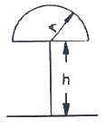
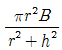
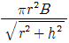
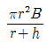
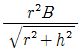
(정답률: 55%)
12. 전기가열 방식 중 전기적 절연물에 교번전계를 가할 때 물체 내부의 전기쌍극자의 회전에 의해 발열하는 가열 방식은?
- 저항 가열
- 유도 가열
- 유전 가열
- 전자빔 가열
(정답률: 58%)
13. 진공 텅스텐 전구에 사용되는 게터는?
- 적린
- 질화바륨
- 탄산칼슘
- 소오다 석회
(정답률: 66%)
14. 다음 중 1차 전지가 아닌 것은?
- 망간건전지
- 공기전지
- 수은전지
- 연축전지
(정답률: 81%)
15. 유전가열에서 피열물내의 소비전력에 비례하는 것은? (단, ε : 피열물의 비유전율, tanδ : 유전체 손실각, E : 전계의 세기, 주파수 : 일정)
- ε·tanδ·E2
- ε·tanδ·E
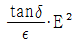
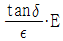
(정답률: 56%)
16. 권상하중 10[t], 권상속도 8[m/min]인 권상기의 권상용 전동기의 소요동력[kW]은 약 얼마인가? (단, 권상장치의 효율은 67[%]이다.)
- 10.5
- 19.5
- 29.5
- 39.5
(정답률: 72%)
17. 파이로 루미네슨스를 이용한 것은?
- 텔레비젼 영상
- 수은등
- 네온관등
- 발염 아크등
(정답률: 52%)
18. 제너 다이오드는 다음 중 어느 회로에 쓰이는가?
- 일정한 전압을 얻는 회로이다.
- 일정한 전류를 흘리는 회로이다.
- 검파회로이다.
- 발진회로이다.
(정답률: 84%)
19. 표준전구의 광도 40[cd], 반사판과의 거리80[cm], 피측정 전구까지의 거리 1.2[m]인 곳에서 광도계 두부가 평형이 되었다면, 피측정전구의 광도는 몇 [cd] 인가?
- 60
- 70
- 80
- 90
(정답률: 26%)
20. 백열전구의 전압이 10[%] 저하하면 광속의 감소율은? (단, 광속은 전압의 3.4제곱에 비례한다.)
- 약 15%
- 약 20%
- 약 30%
- 약 35%
(정답률: 50%)
2과목: 전력공학
21. 가스터빈의 특징을 증기터빈과 비교하였을 때 옳지 않은 것은?
- 기동시간이 짧다.
- 조작이 간단하므로 첨두부하발전이 적당하다.
- 무부하일 때 연료의 소비량이 적게 든다.
- 냉각수가 비교적 적게 든다.
(정답률: 27%)
22. 반등차의 일종으로 주요부분은 러너, 안내날개, 스피드링, 차실 및 흡출관 등으로 되어 있으며 50∼500[m] 정도의 중낙차 발전소에 사용되는 수차는?
- 카플란수차
- 프란시스수차
- 펠턴수차
- 튜우블러수차
(정답률: 42%)
23. 계기용변성기의 점검시 1차측은 어떻게 하여야 하며, 그 이유는?
- 1차측 개방, 과전압으로부터 보호
- 1차측 단락, 절연보호
- 1차측 개방, 지락사고로부터 보호
- 1차측 단락, 2차권선 보호
(정답률: 31%)
24. 저전압 단거리송전선에 적당한 접지방식은?
- 직접접지방식
- 저항접지방식
- 비접지방식
- 소호리액터접지방식
(정답률: 36%)
25. 송전선로의 인덕턴스 L과 정전용량 C가 다음과 같을 때 파동인피던스는? (단, r은 도체 반지름, D는 선간거리 임)
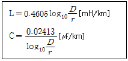
- 약 159 log10
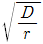
[Ω] - 약 138 log10
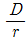
[Ω] - 약 122 log10
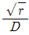
[Ω] - 약 102 log10
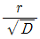
[Ω]
(정답률: 43%)
26. 전력용 콘덴서에서 직렬로 콘덴서 용량의 5% 정도의 유도 리액턴스를 삽입하는 주된 목적은?
- 제3고조파를 제거시키기 위하여
- 제5고조파를 제거시키기 위하여
- 이상전압의 발생을 방지하기 위하여
- 정전용량을 조절하기 위하여
(정답률: 55%)
27. 송전선의 파동임피던스를 Z0[[Ω], 전파속도를 V라할 때, 이 송전선의 단위길이에 대한 인덕턴스 L은 몇 [H]인가?
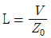
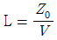
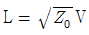
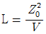
(정답률: 41%)
28. 전력 사용의 변동 상태를 알아보기 위한 것으로 가장 적당한 것은?
- 수용률
- 부등율
- 부하율
- 역률
(정답률: 33%)
29. 합성임피던스 0.25[%]의 개소에 시설해야 할 차단기의 차단용량으로 다음 중 가장 적당한 것은?(단, 합성 임피던스는 10[MVA]를 기준으로 환산한 값이다.)
- 2500[MVA]
- 3300[MVA]
- 3700[MVA]
- 4000[MVA]
(정답률: 35%)
30. 장거리 대전력 송전에 있어서 직류 송전방식의 장점이 아닌 것은?
- 전력손실이 작다.
- 절연내력이 강하다.
- 비동기 연계가 가능하다.
- 전압의 승압과 강압이 용이하다.
(정답률: 45%)
31. 네트워크 배전방식의 장점이 아닌 것은?
- 사고시 정전범위를 축소시킬 수 있다.
- 전압변동이 적어진다.
- 부하의 증가에 대한 적응성이 좋다.
- 인축의 접지사고가 적어진다.
(정답률: 35%)
32. 중거리 송전선로 π형 일반회로의 관계식 ES=AER+BIR에서 4단자 정수 B의 값은?
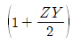
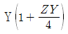
- Z
- Y
(정답률: 37%)
33. 150[kVA] 단상변압기 3대를 Δ-Δ결선으로 사용하다가 1대의 고장으로 V-V결선으로 사용하면 약 몇[kVA] 부하까지 사용할 수 있는가?
- 130 [kVA]
- 235 [kVA]
- 260 [kVA]
- 450 [kVA]
(정답률: 46%)
34. 역률 80%(지상)인 1000[kVA]의 부하를 100%의 역률로 개선하는데 필요한 전력용 콘덴서의 용량은 몇 [kVA]인가?
- 200[kVA]
- 400[kVA]
- 600[kVA]
- 800[kVA]
(정답률: 34%)
35. 공칭단면적 200[mm2], 전선무게 1.838[kg/m], 전선의 바깥지름 18.5[mm]인 경동연선을 경간250[m]로 가선하는 경우 이도는? (단, 경동연선의 인장하중은 7910[kg], 빙설하중은 0.416[kg/m], 풍압하중은 1.525[kg/m]이고 안전율은 2.2이다.)
- 약 2.17[m]
- 약 3.78[m]
- 약 4.73[m]
- 약 5.92[m]
(정답률: 23%)
36. 전선의 자체 중량과 빙설의 종합하중은 W1, 풍압하중을 W2라 할 때 합성하중은?
- W1+W2
- W2-W1
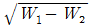
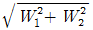
(정답률: 50%)
37. 배전계통에서 전력용 콘덴서를 설치하는 주된 목적은?
- 기기의 보호
- 전력손실의 감소
- 이상전압 방지
- 안정도 향상
(정답률: 32%)
38. 단로기(Disconnecting switch)의 사용 목적은?
- 회로의 개폐
- 단락사고의 차단
- 부하의 차단
- 과전류의 차단
(정답률: 43%)
39. 송전선의 안정도를 증진시키는 방법이 아닌 것은?
- 선로의 회선수 감소를 시킨다.
- 재폐로 방식을 채용한다.
- 속응 여자방식을 채용한다.
- 직렬리액턴스를 감소시킨다.
(정답률: 38%)
40. 인장 강도는 작으나 도전율이 높아 옥내 배선용으로 주로 사용되는 전선은?
- 연동선
- 알루미늄선
- 경동선
- 동복강선
(정답률: 40%)
3과목: 전기기기
41. 권수비가 a인 단상 변압기 3대가 있다. 이것을 1차에 Y, 2차에 Δ로 결선하여 3상 교류 평형 회로에 접속할 때 1차측의 단자전압을 V[V], 전류를 I[A]라고 하면 2차측의 단자전압[V] 및 선전류[A]는 얼마인가? (단, 변압기의 저항, 누설리액턴스, 여자전류는 무시한다.)
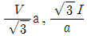
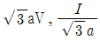
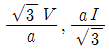
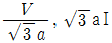
(정답률: 28%)
42. 내분권 복권 발전기의 전기자 권선, 직권 계자 권선, 분권 계자 권선의 저항이 각각 0.06[Ω], 0.⑤[Ω], 41[Ω]이고, 유도기전력이 211[V], 전기자 전류가 1⑤[A]일 때 부하전류는 약 몇 [A]인가?
- 20
- 60
- 80
- 100
(정답률: 25%)
43. 다음 중 전기자반작용을 줄이는 방법으로 옳지 않은 것은?
- 보상권선을 설치한다.
- 보극을 설치한다.
- 기하학적 중성축과 전기적 중성축을 일치시킨다.
- 보상권선에 전기자 전류와 같은 방향의 전류를 흘린다.
(정답률: 40%)
44. 변압기 병렬 운전이 불가능한 권선은?
- Δ-Y, Y-Δ
- Y-Y, Y-Y
- Δ-Δ, Δ-Y
- Y-Δ, Y-Δ
(정답률: 50%)
45. 변압기의 히스테리시스손실은 자속밀도 최대값의 몇 승에 비례하는가? (단, 자속밀도 최대값은 1.5[Wb/m2]이다.)
- 1.6
- 2
- 2.6
- 4
(정답률: 34%)
46. 교류에서 직류로 변환하는 기기가 아닌 것은?
- 회전 변류기
- 인버터
- 전동 직류발전기
- 셀렌 정류기
(정답률: 48%)
47. 직류기의 정류작용에서 전압정류와 관계 되는 것은?
- 탄소브러시
- 보극
- 보상권선
- 접촉저항
(정답률: 31%)
48. 회전자가 슬립 s로 회전하고 있을 때 고정자와 회전자의 실효 권수비를 a라 하면 고정자 기전력 E1과 회전자 기전력 E2 와의 비는?
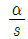
- sα
- (1-s)α
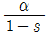
(정답률: 30%)
49. 직류 복권발전기의 외부특성곡선은 다음 중 어느 관계를 나타낸 것인가?
- 부하전류와 단자전압
- 계자전류와 단자전압
- 부하전류와 계자전류
- 계자전류와 회전속도
(정답률: 30%)
50. 직류 전동기의 속도 제어법 중에서 정출력 가변속도의 용도에 적합한 제어법은?
- 저항 제어법
- 전압 제어법
- 계자 제어법
- 일그너 방식법
(정답률: 35%)
51. 20[kVA] 단상 변압기가 있다. 역률이 1일 때 전부하 효율은 97[%]이고 75[%]부하에서 최고 효율이 되었다. 전부하 철손[W]은?
- 약 223
- 약 256
- 약 356
- 약 396
(정답률: 16%)
52. 3상 동기 발전기의 전기자 반작용은 부하의 성질에 따라 다르다. 잘못 설명한 것은?
- cosθ≒1 일 때 즉, 전압과 전류가 동상일 때는 실제적으로 교차자화작용을 한다.
- cosθ≒0 일 때 즉, 전류가 전압보다 90˚ 뒤질 때는 감자작용을 한다.
- cosθ≒0 일 때 즉, 전류가 전압보다 90˚ 앞설 때는 증자작용을 한다.
- cosθ≒ø 일 때 즉, 전류가 전압보다 ø만큼 뒤질때는 증자작용을 한다.
(정답률: 50%)
53. 슬립 5[%]인 유도 전동기의 등가 부하저항은 2차저항 r2의 몇 배인가?
- 12
- 19
- 24
- 32
(정답률: 30%)
54. 단상 유도전동기에서 기동토크가 가장 큰 것은?
- 콘덴서 전동기
- 세이딩 코일형
- 반발 기동형
- 분상 기동형
(정답률: 51%)
55. 12극과 8극인 2개의 유도 전동기를 종속법에 의한 직렬접속법으로 속도제어할 때 전원주파수가 50[Hz]인 경우 무부하 속도 N0는 몇 [rps]인가?
- 4
- 5
- 200
- 300
(정답률: 26%)
56. 정격 단자전압 Vn , 무부하 단자전압 Vo 일 때 동기발전기의 전압변동률[%]은?
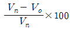
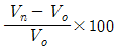
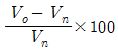
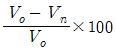
(정답률: 36%)
57. 1000[V]의 단상 교류를 전파 정류해서 150[A]의 직류를 얻는 정류기의 교류측 전류는 약 몇 [A]인가?
- 106
- 116
- 125
- 166
(정답률: 21%)
58. 전압변동률이 작은 동기 발전기는?
- 단락비가 크다.
- 전기자 반작용이 크다.
- 값이 싸진다.
- 동기 리액턴스가 크다.
(정답률: 43%)
59. 3상 권선형 유도전동기의 2차 회로에 저항을 삽입 하는 목적이 아닌 것은?
- 속도는 줄지만 최대 토크를 크게 하기 위하여
- 속도제어를 하기 위하여
- 기동 토크를 크게 하기 위하여
- 기동 전류를 줄이기 위하여
(정답률: 29%)
60. 두 대의 변압기 병렬운전에서 다른 정격은 모두 같고 1차 환산 누설 임피던스만이 2+j3[Ω]과 3+j2[Ω]이다. 부하전류가 50[A]이면 순환전류[A]는 얼마인가
- 3
- 5
- 10
- 25
(정답률: 24%)
4과목: 회로이론
61. 그림과 같은 회로에서 G2[℧]양단의 전압강하 E2[V]는?
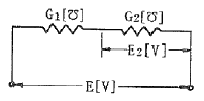
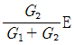
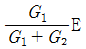
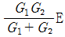
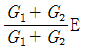
(정답률: 42%)
62. 역률이 50[%]이고 1상의 임피던스가 60[Ω]인 유도부하를 Δ로 결선하고 여기에 병렬로 저항 20[Ω]을 Y결선으로 하여 3상 선간전압 200[V]를 가할 때의 소비전력[W]은?
- 2000[W]
- 2200[W]
- 2500[W]
- 3000[W]
(정답률: 30%)
63. i1=Imsinωt[A]와 i2=Imcosωt[A]인 두 교루전류의 위상차는 몇 도인가?
- 0°
- 60°
- 30°
- 90°
(정답률: 40%)
64. 그림과 같은 회로에서 15[Ω]의 저항에 흐르는 전류는 I는 몇 [A] 인가?
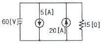
- 4[A]
- 6[A]
- 8[A]
- 10[A]
(정답률: 42%)
65. 분포 정수회로에서 직렬 임피던스 Z[Ω], 병렬 어드미턴스 Y[℧]일 때 선로의 전파정수 γ는?
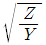
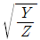
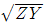
- ZY
(정답률: 34%)
66. 비정현파의 일그러짐의 정도를 표시하는 양으로서 왜형률이란?
- 평균치/실효치
- 실효치/최대치
- 고조파만의 실효치/기본파의 실효치
- 기본파의 실효치/고조파만의 실효치
(정답률: 47%)
67. LC 직렬회로에 직류 기전력 E[V]를 t=0에서 갑자기 인가할 때 C[F]에 걸리는 최대 전압[V]은?
- E
- 1.5E
- 2E
- 2.5E
(정답률: 23%)
68. 회로에서 단자 1-1'에서 본 구동점 임피던스 Z11은 몇 [Ω]인가?
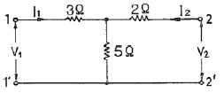
- 5[Ω]
- 8[Ω]
- 10[Ω]
- 15[Ω]
(정답률: 40%)
69. 어떤 회로에서 E=100∠45°[V]의 전압을 가할 때 전류 I = 5∠-15°[A]가 흘렀다. 이 회로에서의 소비전력[W]는?
- 250[W]
- 500[W]
- 950[W]
- 1200[W]
(정답률: 30%)
70. 그림과 같은 회로에서 단자 a, b간의 전압 Vab[V]는?
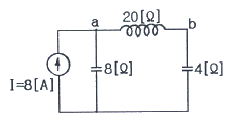
- -j160
- j160
- 40
- 80
(정답률: 35%)
71. 선간전압 E[V]의 3상 평형 전원에 저항 R[Ω]이 그림과 같이 접속되어 있는 경우 a, b 2상간에 접속된 전력계의 눈금을 W[W]라고 하면 c상의 전류를 계산하면 얼마인가?
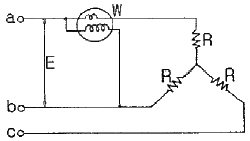
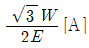
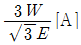
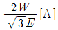
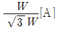
(정답률: 32%)
72. 그림과 같은 정현파의 평균값[V]은?
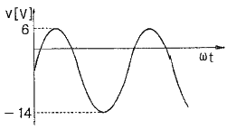
- -10[V]
- 10[V]
- -4[V]
- 4[V]
(정답률: 30%)
73. RC 직렬회로의 과도현상에 대한 설명이다. 옳게 설명한 것은?
- RC 값이 클수록 과도 전류값은 빨리 사라진다.
- RC 값이 클수록 과도 전류값은 천천히 사라진다.
- RC 값에 관계없다.
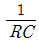
값이 클수록 과도 전류값은 천천히 사라진다.
(정답률: 46%)
74. 대칭 3상 전압이 a상 Va[V], b상 Vb=a2Va[V], c상 Vc=aVa[V]일 때 a 상을 기준으로 한 대칭분 전압 중 정상분 V1[V]은 어떻게 표시되는가? (단,
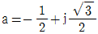
이다.)- 0
- Va
- aVa
- a2Va
(정답률: 37%)
75. RC직렬회로에 V[V]의 교류 기전력을 가하는 경우 저항 R[Ω]에서 소비되는 최대전력[W]은 얼마인가?
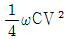
- 2ω2CV
- Cω2V2
(정답률: 43%)
76. sin(10t+60°)의 라플라스 변환은?
(정답률: 29%)
77. 그림과 같은 회로에서 전류 I[A]를 나타내는 식은?
(정답률: 29%)
78. 는 얼마인가?
(정답률: 22%)
79. h 파라미터(h-parameter)에서 개방출력 어드미턴스와 같은 것은?
- H11
- H12
- H21
- H22
(정답률: 30%)
80. 정현파 사이클의 수학적인 평균값은?
- 0.637×최대값
- 0.707×최대값
- 1.417×실효값
- 0
(정답률: 29%)
5과목: 전기설비
81. 특고압 가공전선로의 지지물로 사용하는 B종 철주에서 각도형은 전선로 중 몇 도를 넘는 수평각도를 이루는 곳에 사용되는가?
- 1
- 2
- 3
- 5
(정답률: 52%)
82. 저압 옥내배선에서 시설장소 및 사용전압의 제한을 받지 않고 시설할 수 있는 공사가 아닌 것은?
- 금속관 공사
- 애자사용 공사
- 케이블 공사
- 합성수지관 공사
(정답률: 33%)
83. 고압 가공 전선로의 지지물로서 B종 철주 또는 B종 철근 콘크리트주를 시설하는 경우의 경간은 몇 [m]이하인가?
- 150
- 200
- 250
- 300
(정답률: 35%)
84. 터널내 전선로의 시설방법으로 옳지 않은 것은?
- 저압 전선은 지름 2.0mm 의 경동선이나 이와 동등 이상의 세기 및 굵기의 절연전선을 사용하였다.
- 고압 전선은 케이블공사로 하였다.
- 저압 전선을 애자사용공사에 의하여 시설하고 이를 레일면상 또는 노면상 2.5m 이상으로 하였다.
- 저압 전선을 가요전선관 공사에 의해 시설하였다.
(정답률: 30%)
85. 사용전압이 35kV 이하인 특고압 가공전선이 건조물과 제2차 접근상태로 시설되는 경우에 특고압 가공전선로는 제 몇 종 특고압 보안공사를 하여야 하는가?
- 제1종 특고압 보안공사
- 제2종 특고압 보안공사
- 제3종 특고압 보안공사
- 제4종 특고압 보안공사
(정답률: 46%)
86. 폭발성 또는 연소성의 가스가 침입할 우려가 있는 지중함에 그 크기가 몇 [m3]이상의 것은 통풍장치 기타 가스를 방산시키기 위한 적당한 장치를 시설하여야 하는가?
- 0.9
- 1.0
- 1.5
- 2.0
(정답률: 44%)
87. 저고압 가공전선이 철도를 횡단하는 경우 레일면상 높이는 몇 [m] 이상이어야 하는가?
- 4[m]
- 5[m]
- 5.5[m]
- 6.5[m]
(정답률: 50%)
88. 전동기의 정격전류 합계가 40[A]이고, 전열기 및 전등 부하가 30[A]일 때 옥내 간선의 허용전류는?
- 40[A]
- 70[A]
- 80[A]
- 110[A]
(정답률: 23%)
89. 접지공사에서 접지극으로 사용되는 금속체 수도간의 접지저항의 최대값은 얼마인가?
- 2[Ω]
- 3[Ω]
- 4[Ω]
- 5[Ω]
(정답률: 34%)
90. 고압 가공전선로에 케이블을 사용하는 기준에 적합하지 않은 것은?
- 케이블은 조가용선에 행거로 시설하여 1m 이하로 시설하여야 한다.
- 조가용선은 단면적 22[mm2] 이상인 아연도금 강연선을 사용하여야 한다.
- 조가용선 및 케이블의 피복에 사용하는 금속체에는 제3종 접지공사를 하여야 한다.
- 조가용선의 중량 및 수평풍압에는 각각 케이블의 중량 및 케이블에 대한 수평풍압을 가산한다.
(정답률: 36%)
91. 건조한 장소로서 전개된 장소에 한하여 시설할 수 있는 사용전압 3300V인 옥내배선공사는?
- 금속관 공사
- 플로어덕트 공사
- 케이블 공사
- 합성수지관 공사
(정답률: 26%)
92. 다음 중 발전소의 계측요소가 아닌 것은?
- 발전기의 전압 및 전류
- 발전기의 고정자 온도
- 저압용 변압기의 온도
- 변압기의 전류 및 전력
(정답률: 42%)
93. 1차 22900[V], 2차 3300[V]의 변압기를 지상에 설치할 경우 울타리의 높이와 울타리로부터 충전부까지의 거리 합계는 최소 몇 [m] 이상인가?
- 8
- 7
- 6
- 5
(정답률: 27%)
94. 가공전선로에 사용되는 지지물의 강도계산에 적용되는 병종풍압하중은 갑종풍압하중의 얼마를 기초로 하여 계산한 것인가?
- 1/4
- 1/3
- 1/2
- 2/3
(정답률: 40%)
95. 옥내에 시설하는 전동기에 과부하 보호 장치의 시설을 생략할 수 없는 경우는?
- 전동기가 단상의 것으로 전원측 전로에 시설하는 과전류 차단기의 정격 전류가 15[A] 이하인 경우
- 전동기가 단상의 것으로 전원측 전로에 시설하는 배선용 차단기의 정격 전류가 20[A] 이하인 경우
- 전동기의 구조나 부하의 성질로 보아 전동기가 소손할 정도의 과전류가 생길 우려가 없는 경우
- 전동기의 정격 출력이 0.75[kW]인 전동기
(정답률: 44%)
96. 사용전압이 400[V] 미만인 옥내전로로서 다른 옥내전로에 접속하는 길이가 얼마일 때 인입구 개폐기를 생략할 수 있는가?
- 5[m] 이하
- 8[m] 이하
- 10[m] 이하
- 15[m] 이하
(정답률: 22%)
97. 특고압 가공전선로의 지지물에 시설하는 통신선 또는 이것에 직접 접속하는 통신선일 경우에 설치하여야 할 보안장치로서 모두 옳은 것은?
- 특고압용 제1종 보안장치, 특고압용 제3종 보안장치
- 특고압용 제2종 보안장치, 고압용 제2종 보안장치
- 특고압용 제2종 보안장치, 특고압용 제3종 보안장치
- 특고압용 제1종 보안장치, 특고압용 제2종 보안장치
(정답률: 34%)
98. 제1종 특고압 보안공사의 154[kV]에 있어서 가공전선으로 시설할 경우 단면적 몇 [mm2] 이상의 경동연선으로 시설하여야 하는가?
- 55
- 150
- 200
- 250
(정답률: 38%)
99. 3300[V]용 전동기의 절연내력시험은 몇 [V] 전압에서 권선과 대지간에 연속하여 10분간 가하여 견디어야 하는가?
- 4125
- 4950
- 6600
- 7600
(정답률: 39%)
100. 11000[V] 전로와 100[V] 전로를 결합한 변압기의 100[V]측 1단자 접지공사와 접지저항 최대값은 얼마로 하여야 하는가?
- 제2종 접지공사로 하고 그 값은 10[Ω]이하
- 제2종 접지공사로 하고 그 값은 100[Ω]이하
- 제3종 접지공사로 하고 그 값은 100[Ω]이하
- 제1종 접지공사로 하고 그 값은 10[Ω]이하
(정답률: 19%)